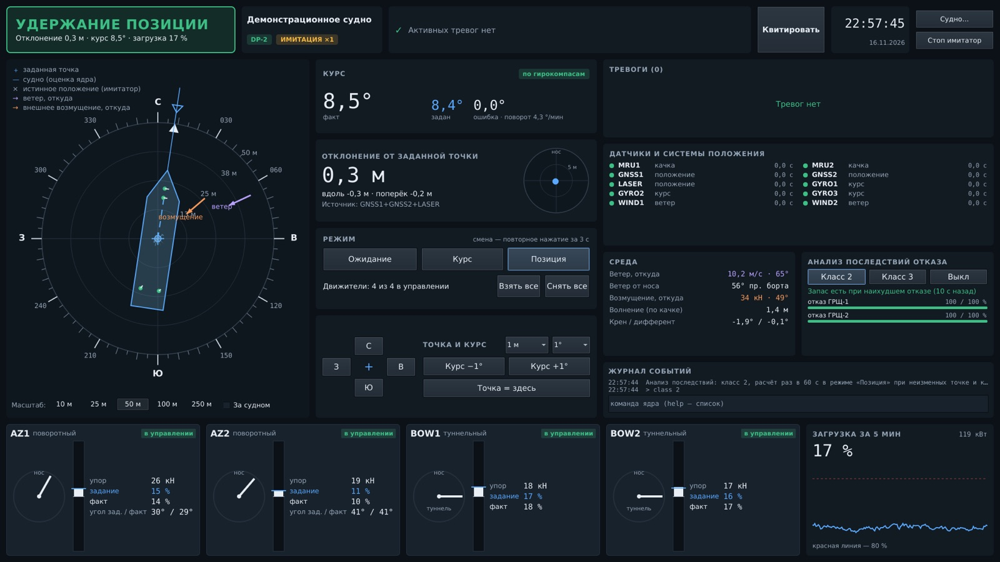
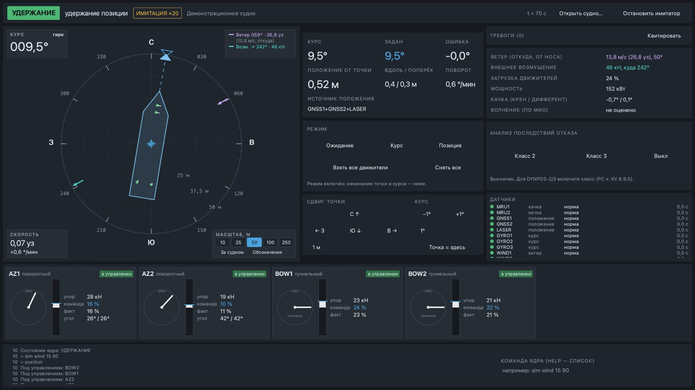
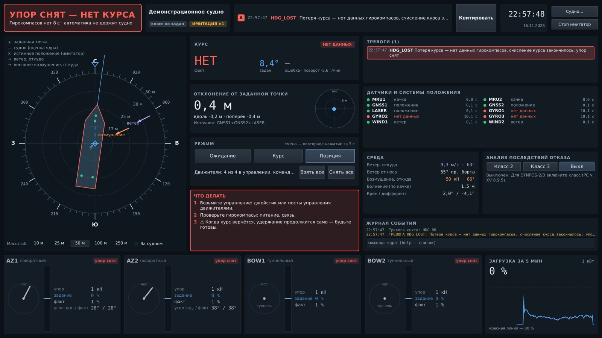
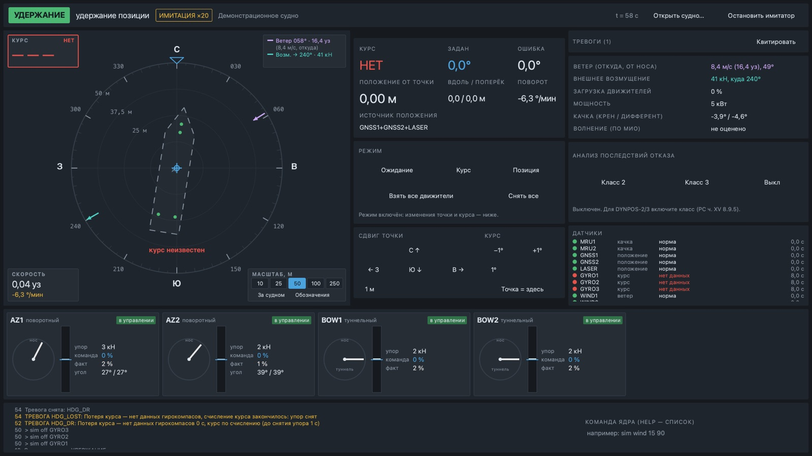
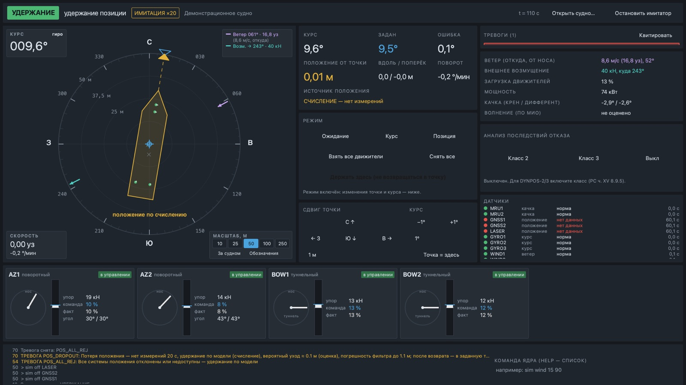
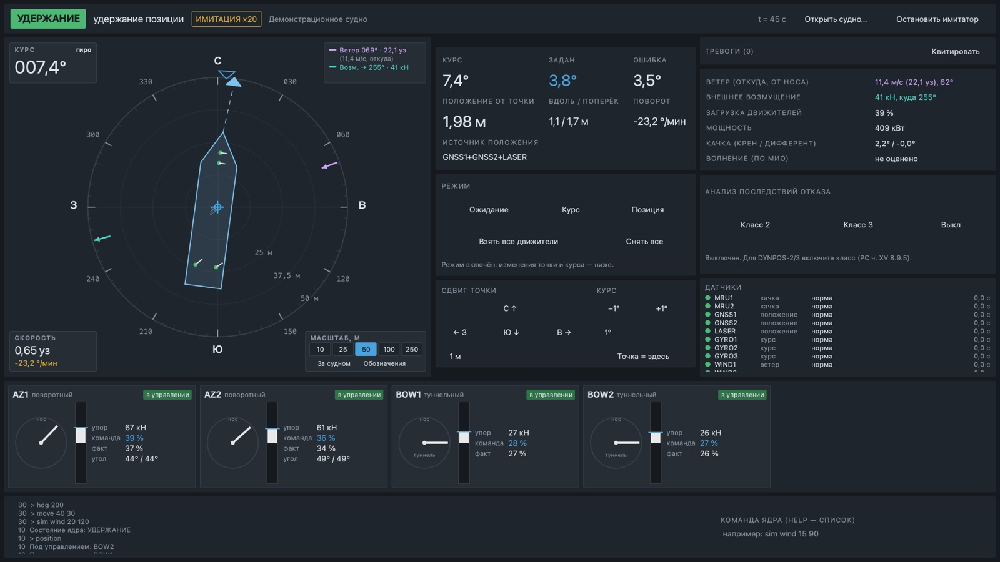

Разобраны пять снимков пульта: норма, счисление курса, нет курса, счисление положения и возврат в точку. Ниже даны оценки, найденные недочёты и переработанный экран. На макете можно переключать те же пять ситуаций и включить разметку с пояснениями.
Переделан плоттер в коде пульта: hmi/qml/PositionView.qml и hmi/qml/Theme.qml. Регулятор, оценка положения и тревоги не затронуты, изменено только отображение. Коммит лежит в локальной ветке hmi-plan-view репозитория SDP-Core-cpp и в GitHub не отправлен. Сборка с пультом прошла, ctest: 36 из 36 тестов пройдены, включая проверки пульта.






⚠ Снимки «до» сделаны вами на более новой версии пульта, а «после» — на версии из папки sdpcore, она же в репозитории. Поэтому правая часть экрана на парах отличается. Сравнивать нужно только левую панель, сам план положения.
Посмотреть глазами оператора: удобство и информативность
Разобраны пять снимков: оценки по четырём критериям и 21 недочёт с исправлением (ниже на странице). Для плоттера всё нужное оператору собрано в четырёх окнах по углам: курс, ветер и возмущение, скорость и поворот, масштаб.
Где огрехи — добавить вид дизайнера
Ниже на странице есть макет всего экрана в пяти ситуациях с разметкой из 12 пояснений. План положения из макета уже перенесён в код.
Графика не должна перебивать отображение
Кольца и сетка приглушены. Подписи колец стоят на диагонали, которая сама выбирается подальше от курса, ветра и возмущения, и лежат на подложке. Под корпусом судна подписи не ставятся. У стрелок ветра и возмущения нет текста на плане, цифры вынесены в окна. Радиус картушки подбирается так, чтобы градусы не заходили под окна.
Если что-то вращается — градусы
Курс трёхзначный (009,5°) с источником: гиро, СЧИСЛ. или НЕТ. Картушка размечена через 5°, подписи 030…330 и С/В/Ю/З. Курс судна и курс задания показаны значками на ободе. Ветер «откуда» и возмущение «куда» — целыми градусами (059°, 242°). Поворот дан в °/мин со знаком.
Скорость в узлах
Скорость судна над грунтом идёт в узлах (0,07 уз). Ветер дан в узлах, вторым — в м/с: «26,8 уз (13,8 м/с)».
Мили
На плоттере удержания расстояния остаются в метрах (кольца 12,5–250 м). Мили здесь были бы крупнее нужной точности. Мили нужны для перехода и маршрута, а таких режимов в пульте пока нет. Правило записано в таблицу единиц ниже.
Остальной экран
Следующие шаги:
⚠ Течения, координат, оборотов и мощности по движителям ядро пульту не передаёт, поэтому сначала их нужно вывести из ядра в пульт (hmicore). Попутно замечено: надпись на кнопке «Держать здесь» почти не видна, тёмный текст на тёмном. Это Main.qml, в этот шаг не входило.
Правила макета: графика лежит нижним слоем и приглушена. Числа и подписи идут верхним слоем, на подложке, и не ставятся поверх линий. Направления на картушке показаны значками на ободе, а их значения выведены в углы панели.
Номера экранов: 1 — норма, 2 — счисление курса, 3 — нет курса, 4 — счисление положения, 5 — возврат в точку. Красным отмечено то, что может ввести оператора в заблуждение в аварии.
Правило простое: у каждого числа есть единица. Если величина вращается или задаёт направление, она показывается в градусах. Скорости судна, ветра и течения даются в узлах, а расстояния на удержании — в метрах.
| Величина | Единица | Формат | Пример |
|---|---|---|---|
| Курс, пеленг, направление | ° | три цифры, 0,1° | 008,5° |
| Скорость поворота (ROT) | °/мин | со знаком; + вправо | +4,3 °/мин |
| Скорость судна над грунтом | уз | 0,01 уз до 1 уз, затем 0,1 | 0,12 уз |
| Скорость вдоль / поперёк | уз | со знаком и стороной | +0,05 уз вперёд · 0,02 уз к ЛБ |
| Отклонение, дистанции удержания | м | 0,1 м | 8,2 м |
| Дистанции перехода, маршрут | мили | 0,01 мили; меньше 0,1 мили — в метрах | 0,25 мили |
| Ветер | уз, вторым — м/с | «откуда», ° | 065° · 19,8 уз (10,2 м/с) |
| Течение | уз | «куда», ° (так принято у течения; подписывать явно) | 229° · 0,6 уз |
| Угол поворотного движителя | ° | 000–359, 0° — упор к носу | зад. 030° · факт 029° |
| Упор, шаг, обороты, мощность | кН · % · об/мин · кВт | целые | 26 кН · 15 % · 412 об/мин · 86 кВт |
| Крен / дифферент | ° | со стороной: ЛБ/ПрБ, нос/корма | 1,9° ЛБ / 0,1° корма |
| Координаты | ° ′ | градусы, минуты до 0,001′ | 59°56,123′ с.ш. 030°18,456′ в.д. |
⚠ На макете есть поля, которых сейчас нет в данных ядра: скорость над грунтом, течение, обороты, мощность движителей, координаты, расхождение гирокомпасов и качество GNSS. Их нужно сначала вывести из ядра в пульт (hmicore), иначе на экране будут прочерки.
| Файл | Что менять |
|---|---|
| hmi/qml/PositionView.qml | Подписи колец на одном луче, свободном от курса и стрелок, с подложкой; ветер и течение значками на ободе, цифры в углах; окно курса в углу; при отсутствии курса судно серым пунктиром; убрать легенду в подсказку. |
| hmi/qml/ThrusterTile.qml | Шкала угла с делениями через 30°; задание полым треугольником на ободе, факт стрелкой; горизонтальная полоса упора с нулём; обороты и кВт; плашка состояния без обрезки. |
| hmi/qml/Main.qml | «Что делать» перенести к тревогам, блок «Точка и курс» не скрывать; «Судно…» и «Стоп имитатор» — в меню «Сервис»; блок курса и скорости в узлах; датчики со значениями. |
| hmi/qml/Theme.qml | Развести цвета: dist сейчас почти совпадает с warn; течение — бирюзовый. Добавить сумеречную и ночную гамму. |
| hmi/hmicore.cpp / .h | Новые поля: SOG, скорость вдоль/поперёк, течение, координаты, значения каждого датчика, обороты и мощность движителей, мощность по ГРЩ. |